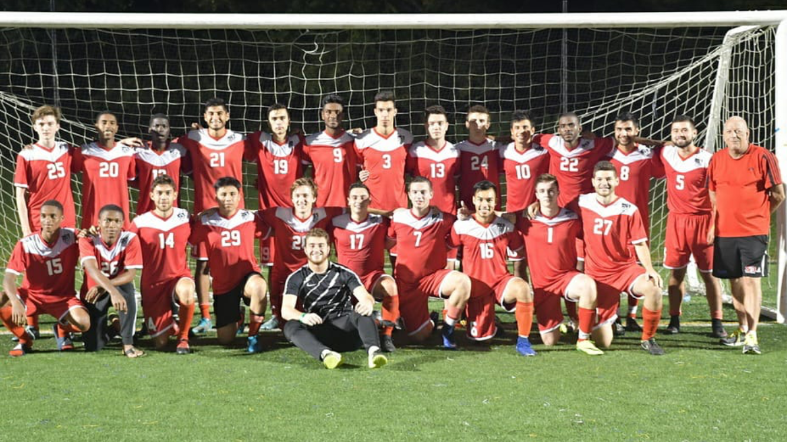

About
I am a senior Computer Science and Applied Mathematics major at Stony Brook University. I enjoy tackling complex problems that require a thorough understanding of computer science fundamentals. I have interests in efficient computing in constrained, and low level environments.
Resume
Projects
Distibuted File Systsem
- Low level, Client Server File System written in C++ with UDP
- Uses a variety of invocation semantics, with client and server side caching, message filtering and automatic logging.
- Code on Github
Graphics Engine
- Graphics Engine written in C, allows for shading, coloring, and simple animations
- Code on Github
Text Tetea
- Built website for Tanzanian education Nonprofit
- Website is prepare children for comprehensive Tanzanian school exam
- Website
Interests
I am an avid soccer player, and am also the president of the Stony Brook Soccer Club. Additionally, I also enjoy skiing, tennis and squash.
